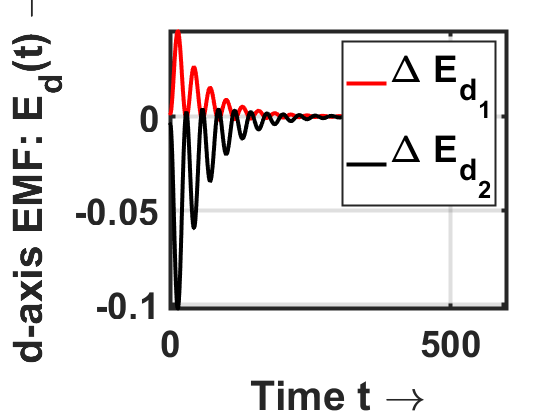
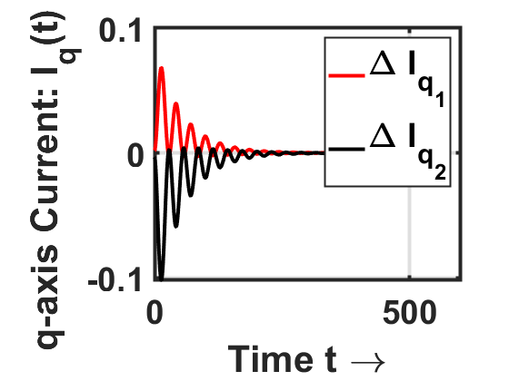

clc,clear,close all
syms s;
ta=300;
[E,A1,B,xeq1,fin_pol1]=stmat(0,100);
[~,A2,~,xeq2,fin_pol2]=stmat(200,100);
im_free=(rank([E A2;zeros(18,18) E])==size(A2,1)+rank(E))
i_cont=(rank([E zeros(18,18) zeros(18,6);A2 E B])==rank(E)+size(A2,1))
im_cont=(rank([E A2 B;zeros(18,18) E zeros(18,6)])==rank(E)+rank([E A2 B]))
adm=(rank([s*E-A2 B E*xeq2])==rank([s*E-A2 B]));
adm_ar=(rank([E A2 B])==rank([s*E-A2 B]));
dec=(rank([s*E'-A2' eye(18)])==size(A2,1));
tspan=[0 500];
options=odeset('Mass',E,'MStateDependence','none','MassSingular','yes');
[t,x]=ode23t(@(t,x) des(A1,A2,B,x,t,ta),tspan,xeq1,options);
figure()
plot(t,x(:,1),'r-','LineWidth', 3),hold on,plot(t,x(:,2),'k-','LineWidth', 3)
xlabel('Time t \rightarrow', 'FontSize', 28, 'FontWeight', 'bold')
ylabel('q-axis EMF: E_q(t) \rightarrow', 'FontSize', 28, 'FontWeight', 'bold')
grid on
legendObj = legend({'\Delta E_{q_1}','\Delta E_{q_2}'}, 'FontSize', 28, 'LineWidth', 1.5);
legendBox = findobj(legendObj, 'Type', 'Patch');
set(legendBox, 'LineWidth', 3)
set(gca, 'LineWidth', 3, 'FontSize', 28, 'FontWeight', 'bold')
hold off
figure()
plot(t,x(:,3),'r-','LineWidth', 3),hold on,plot(t,x(:,4),'k-','LineWidth', 3)
xlabel('Time t \rightarrow', 'FontSize', 28, 'FontWeight', 'bold')
ylabel('d-axis EMF: E_d(t) \rightarrow', 'FontSize', 28, 'FontWeight', 'bold')
grid on
legendObj = legend({'\Delta E_{d_1}','\Delta E_{d_2}'}, 'FontSize', 28, 'LineWidth', 1.5);
legendBox = findobj(legendObj, 'Type', 'Patch');
set(legendBox, 'LineWidth', 3)
set(gca, 'LineWidth', 3, 'FontSize', 28, 'FontWeight', 'bold')
hold off
figure()
plot(t,x(:,5),'r-','LineWidth', 3),hold on,plot(t,x(:,6),'k-','LineWidth', 3)
xlabel('Time t \rightarrow', 'FontSize', 28, 'FontWeight', 'bold')
ylabel('Rotor Angle: \delta(t) \rightarrow', 'FontSize', 28, 'FontWeight', 'bold')
grid on
legendObj = legend({'\Delta \delta_1','\Delta \delta_2'}, 'FontSize', 28, 'LineWidth', 1.5);
legendBox = findobj(legendObj, 'Type', 'Patch');
set(legendBox, 'LineWidth', 3)
set(gca, 'LineWidth', 3, 'FontSize', 28, 'FontWeight', 'bold')
hold off
figure()
plot(t,x(:,7),'r-','LineWidth', 3),hold on,plot(t,x(:,8),'k-','LineWidth', 3)
xlabel('Time t \rightarrow', 'FontSize', 28, 'FontWeight', 'bold')
ylabel('Rotor Anglular Velocity: \omega(t) \rightarrow', 'FontSize', 28, 'FontWeight', 'bold')
grid on
legendObj = legend({'\Delta \omega_1','\Delta \omega_2'}, 'FontSize', 28, 'LineWidth', 1.5);
legendBox = findobj(legendObj, 'Type', 'Patch');
set(legendBox, 'LineWidth', 3)
set(gca, 'LineWidth', 3, 'FontSize', 28, 'FontWeight', 'bold')
hold off
figure()
plot(t,x(:,8),'r-','LineWidth', 3),hold on,plot(t,x(:,10),'k-','LineWidth', 3)
xlabel('Time t \rightarrow', 'FontSize', 28, 'FontWeight', 'bold')
ylabel('d-axis Current: I_d(t) \rightarrow', 'FontSize', 28, 'FontWeight', 'bold')
grid on
legendObj = legend({'\Delta I_{d_1}','\Delta I_{d_2}'}, 'FontSize', 28, 'LineWidth', 1.5);
legendBox = findobj(legendObj, 'Type', 'Patch');
set(legendBox, 'LineWidth', 3)
set(gca, 'LineWidth', 3, 'FontSize', 28, 'FontWeight', 'bold')
hold off
figure()
plot(t,x(:,11),'r-','LineWidth', 3),hold on,plot(t,x(:,12),'k-','LineWidth', 3)
xlabel('Time t \rightarrow', 'FontSize', 28, 'FontWeight', 'bold')
ylabel('q-axis Current: I_q(t) \rightarrow', 'FontSize', 28, 'FontWeight', 'bold')
grid on
legendObj = legend({'\Delta I_{q_1}','\Delta I_{q_2}'}, 'FontSize', 28, 'LineWidth', 1.5);
legendBox = findobj(legendObj, 'Type', 'Patch');
set(legendBox, 'LineWidth', 3)
set(gca, 'LineWidth', 3, 'FontSize', 28, 'FontWeight', 'bold')
hold off
figure()
plot(t,x(:,13),'r-','LineWidth', 3),hold on,plot(t,x(:,14),'k-','LineWidth', 3),plot(t,x(:,15),'b-','LineWidth', 3)
xlabel('Time t \rightarrow', 'FontSize', 28, 'FontWeight', 'bold')
ylabel('Voltage: V(t) \rightarrow', 'FontSize', 28, 'FontWeight', 'bold')
grid on
legendObj = legend({'\Delta V_1','\Delta V_2','\Delta V_3'}, 'FontSize', 28, 'LineWidth', 1.5);
legendBox = findobj(legendObj, 'Type', 'Patch');
set(legendBox, 'LineWidth', 3)
set(gca, 'LineWidth', 3, 'FontSize', 28, 'FontWeight', 'bold')
hold off
figure()
plot(t,x(:,16),'r-','LineWidth', 3),hold on,plot(t,x(:,17),'k-','LineWidth', 3),plot(t,x(:,18),'b-','LineWidth', 3)
xlabel('Time t \rightarrow', 'FontSize', 28, 'FontWeight', 'bold')
ylabel('Voltage Phase: \theta(t) \rightarrow', 'FontSize', 28, 'FontWeight', 'bold')
grid on
legendObj = legend({'\Delta \theta_1','\Delta \theta_2','\Delta \theta_3'}, 'FontSize', 28, 'LineWidth', 1.5);
legendBox = findobj(legendObj, 'Type', 'Patch');
set(legendBox, 'LineWidth', 3)
set(gca, 'LineWidth', 3, 'FontSize', 28, 'FontWeight', 'bold')
hold off
function dae=des(A1,A2,B,x,t,ta)
u=zeros(6,1);
if t>ta
A=A2;
else
A=A1;
end
dae=A*x+B*u;
end
function [E,A,B,xeq,fin_pol]=stmat(t,ta)
omega_ref=1;
Efd1=0.8;
Efd2=0.8;
TM1=0.2;
TM2=0.25;
H1=6.4;
H2=3.01;
D1=0.2;
D2=0.2;
Rs1=0;
Rs2=0;
Xd1=0.8958;
Xd2=1.3125;
Xq1=0.8645;
Xq2=1.2578;
Xd_dash1=0.1198;
Xd_dash2=0.1813;
Xq_dash1=0.1969;
Xq_dash2=0.25;
Tdo1=6;
Tdo2=5.89;
Tqo1=0.535;
Tqo2=0.6;
if t<=ta
B=[-0.25 0.1 0.15;0.1 -0.2 0.1;0.15 0.1 -0.25];
else
B=[-0.25 0.1 0.15;0.1 -0.2 0.1;0 0 0];
end
Q1=0.1194;
Q2=0.1304;
Q3=0.15;
eq1_0=1.781266;
eq2_0=1.145919;
ed1_0=-0.001078;
ed2_0=0.002425;
delta1_0=-0.0537;
delta2_0=-0.0316;
omega1_0=1;
omega2_0=1;
id1_0=-0.297229;
id2_0=-0.092050;
iq1_0=-0.001615;
iq2_0=0.002406;
v1_0=1.816875;
v2_0=1.162612;
v3_0=0.709778;
theta1_0=-0.0529;
theta2_0=-0.0342;
theta3_0=-0.0473;
efd1_0=1.550617;
efd2_0=1.041792;
tm1_0=1.550617;
tm2_0=1.041792;
x0=[eq1_0;eq2_0;ed1_0;ed2_0;delta1_0;delta2_0;omega1_0;omega2_0;id1_0;id2_0;iq1_0;iq2_0;v1_0;v2_0;v3_0;theta1_0;theta2_0;theta3_0;efd1_0;efd2_0;tm1_0;tm2_0];
f=@(x)[-x(1)-(Xd1-Xd_dash1)*x(9)+x(19);
-x(2)-(Xd2-Xd_dash2)*x(10)+x(20);
-x(3)+(Xq1-Xq_dash1)*x(11);
-x(4)+(Xq2-Xq_dash2)*x(12);
x(7)-omega_ref;
x(8)-omega_ref;
x(21)-x(3)*x(9)-x(1)*x(11)-(Xq_dash1-Xd_dash1)*x(9)*x(11)-D1*(x(7)-omega_ref);
x(22)-x(4)*x(10)-x(2)*x(12)-(Xq_dash2-Xd_dash2)*x(10)*x(12)-D2*(x(8)-omega_ref);
x(3)-x(13)*cos(x(16))*sin(x(5))+x(13)*sin(x(16))*cos(x(5))-Rs1*x(9)+Xq_dash1*x(11);
x(4)-x(14)*cos(x(17))*sin(x(6))+x(14)*sin(x(17))*cos(x(6))-Rs2*x(10)+Xq_dash2*x(12);
x(1)-x(13)*cos(x(16))*cos(x(5))-x(13)*sin(x(16))*sin(x(5))-Rs1*x(11)-Xd_dash1*x(9);
x(2)-x(14)*cos(x(17))*cos(x(6))-x(14)*sin(x(17))*sin(x(6))-Rs2*x(12)-Xd_dash2*x(10);
x(9)*x(13)*sin(x(5)-x(16))+x(11)*x(13)*cos(x(5)-x(16))+x(21)-x(13)*x(13)*B(1,1)*sin(x(16)-x(16))-x(13)*x(14)*B(1,2)*sin(x(16)-x(17))-x(13)*x(15)*B(1,3)*sin(x(16)-x(18));
x(10)*x(14)*sin(x(6)-x(17))+x(12)*x(14)*cos(x(6)-x(17))+x(22)-x(14)*x(13)*B(2,1)*sin(x(17)-x(16))-x(14)*x(14)*B(2,2)*sin(x(17)-x(17))-x(14)*x(15)*B(2,3)*sin(x(17)-x(18));
x(21)+x(22)-x(15)*x(13)*B(3,1)*sin(x(18)-x(16))-x(15)*x(14)*B(3,2)*sin(x(18)-x(17))-x(15)*x(15)*B(3,3)*sin(x(18)-x(18));
x(9)*x(13)*cos(x(5)-x(16))-x(11)*x(13)*sin(x(5)-x(16))+Q1-x(13)*x(13)*B(1,1)*cos(x(16)-x(16))-x(13)*x(14)*B(1,2)*cos(x(16)-x(17))-x(13)*x(15)*B(1,3)*cos(x(16)-x(18));
x(10)*x(14)*cos(x(6)-x(17))-x(12)*x(14)*sin(x(6)-x(17))+Q2-x(14)*x(13)*B(2,1)*cos(x(17)-x(16))-x(14)*x(14)*B(2,2)*cos(x(17)-x(17))-x(14)*x(15)*B(2,3)*cos(x(17)-x(18));
Q3-x(15)*x(13)*B(3,1)*cos(x(18)-x(16))-x(15)*x(14)*B(3,2)*cos(x(18)-x(17))-x(15)*x(15)*B(3,3)*cos(x(18)-x(18));
];
options = optimset('Algorithm', 'levenberg-marquardt','TolFun', 1e-12, 'TolX', 1e-12,'MaxIter', 10000000, 'MaxFunEvals', 10000000);
[xeq,~,~,~,A]=fsolve(f,x0,options);
A=A(1:18,1:18);
xeq=xeq(1:18);
B=[0 0 0 0 0 0;0 0 0 0 0 0;0 0 0 0 0 0;0 0 0 0 0 0;0 0 0 0 0 0;0 0 0 0 0 0;0 0 0 0 0 0;0 0 0 0 0 0;0 0 0 0 0 0;0 0 0 0 0 0;0 0 0 0 0 0;0 0 0 0 0 0;1 0 0 0 0 0;0 1 0 0 0 0;0 0 1 0 0 0;0 0 0 1 0 0;0 0 0 0 1 0;0 0 0 0 0 1];
E=zeros(18,18);
E(1,1)=Tdo1;
E(2,2)=Tdo2;
E(3,3)=Tqo1;
E(4,4)=Tqo2;
E(5,5)=1;
E(6,6)=1;
E(7,7)=(2*H1)/omega_ref;
E(8,8)=(2*H2)/omega_ref;
pol=eig(A,E);
s_pol=size(pol);
fin_pol=[];
for i=1:s_pol(1)
if pol(i)~=Inf
fin_pol=[fin_pol;pol(i)];
end
end
end
Equation solved.
fsolve completed because the vector of function values is near zero
as measured by the value of the function tolerance, and
the problem appears regular as measured by the gradient.
No solution found.
fsolve stopped because the last step was ineffective. However, the vector of function
values is not near zero, as measured by the value of the function tolerance.
im_free =
logical
0
i_cont =
logical
1
im_cont =
logical
1
 